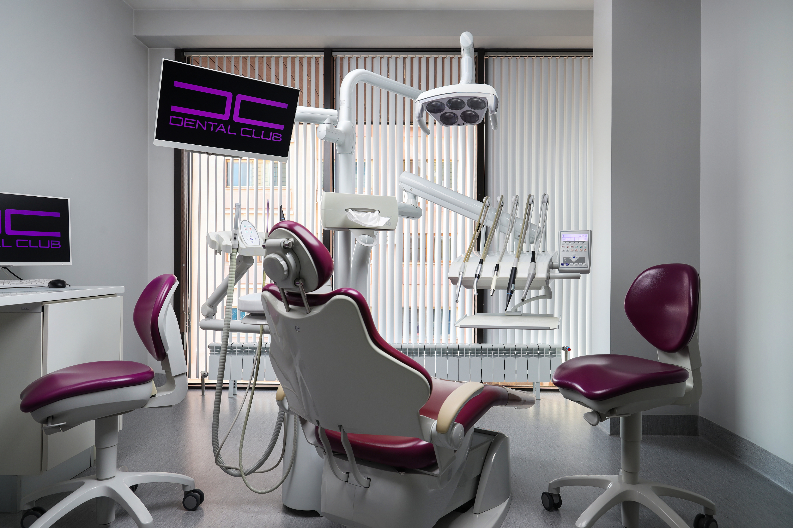
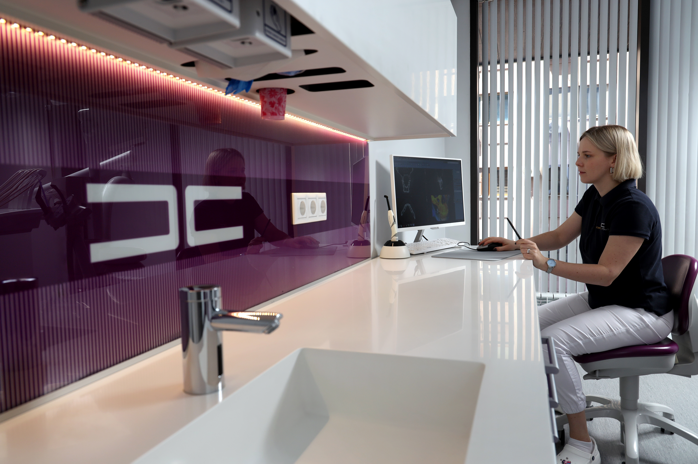
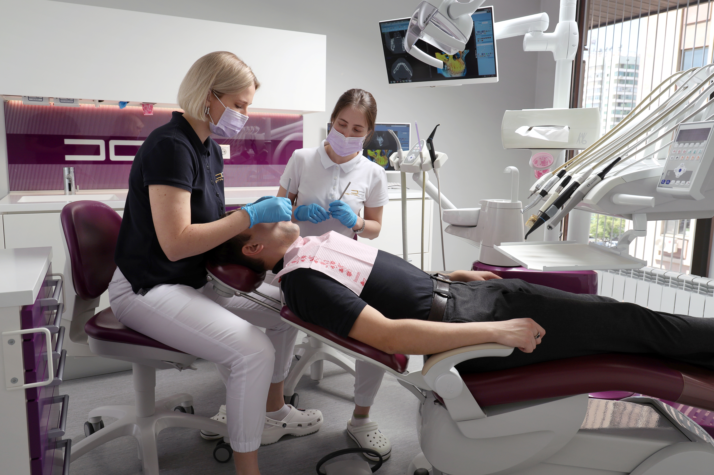

ЭСТЕТИЧЕСКАЯ ОРТОДОНТИЯ
Эстетическая ортодонтия – область стоматологии, специализирующаяся на коррекции прикуса - выравнивании зубов и создании улыбки вашей мечты.
Ортодонтическое лечение не имеет строгих возрастных рамок и может проводиться как у взрослых пациентов, так и у детей!


Ортодонтия в Dental Club - это:
- Цифровые методы диагностики и планирования лечения по международным стандартам и протоколам.
- Лучшие саморегулирующие брекет-системы, производимые в США фирмой American Orthodontics.
- Системы съёмных ортодонтических капп от компании Invisalign, лидера среди производителей элайнеров в мире.
- Детская ортодонтия, позволяющая избежать проблем с прикусом в более позднем возрасте, благодаря ранней диагностике и своевременному лечению.


ЭЛАЙНЕРЫ
Это индивидуально изготовленные каппы из специального прозрачного материала. Они используются для коррекции зубов и считаются наиболее быстрым, современным и безболезненным методом ортодонтического лечения.
В клинике Dental Club мы используем элайнеры от международного лидера Invisalign (США). Такие элайнеры отличаются от других высоким качеством, цифровым методом моделирования результата – Clincheck и надежным сервисом.
Элайнеры удобны и практически не заметны в повседневной жизни, а их форма создается по цифровой модели ваших зубов. В отличие от брекет-систем элайнеры можно снимать во время еды и чистки зубов.
Весь процесс лечения пациент может увидеть в цифровом формате. Каждый набор капп соответствует определённому этапу движения зубов в полости рта.
Специалисты нашей клиники смогут подробно проконсультировать Вас по этапам коррекции прикуса и помогут Вам получить идеально ровные зубы.
Dental Club является сертифицированной клиникой по продуктам компании Invisalign. Мы оказываем пациентам поддержку в течение всего периода лечения.
Этапы лечения кариеса (пломбы):
1-ое посещение:
- Обезболивание
- Препарирование кариозного процесса и удаление старых реставраций
- Снятие слепка
- Изготовление временной пломбы
- Припасовка и полировка временной пломбы
2-ое посещение:
- Обезболивание
- Удаление временной пломбы
- Обработка вкладки и полости зуба
- Фиксация вкладки на композиционный цемент
- Припасовка и полировка
